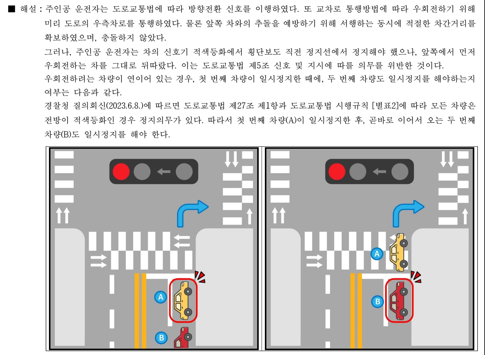

982. 驾驶人的以下行为中，违反《道路交通法》的是？（参考官网）
视频题可在 Gihap App 或官方网站播放。
官方视频 ↗- ①打开转向灯告知行进方向。
- ②提前沿着道路右侧边缘行驶后右转进入。
- ③注意避免与前方机动车发生追尾。
- ④根据前方信号灯指示右转。
查看答案
答案
④ 根据前方信号灯指示右转。
依据
主角司机按照道路交通法使用了转向灯。另外，为了按照路口交通方式右转，我提前使用了道路的右侧车道。当然，为了防止与前车相撞，我开得很慢，并保证了适当的车距，最终没有发生碰撞。然而，主角司机在红灯亮起时不得不停在人行横道前的停车线处，但他却跟随了前面最先右转的汽车。这违反了道路交通法第五条规定的遵守信号和指示的义务。当陆续有车辆试图右转时，当第一辆车暂时停车时，第二辆车是否也必须暂时停车如下。根据警察厅询问回复（2023年6月8日），根据道路交通法第27条第1项及道路交通法施行规则【附录2】，所有车辆在前方红灯时必须停车。因此，在第一辆车（A）暂时停止后，紧随其后的第二辆车（B）也必须暂时停止。

依据文字为学习用机器翻译。